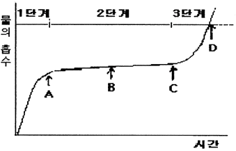

종자기능사 (2009-01-18 기출문제)
1과목: 종자(임의구분)
1. 채소종자의 발아시험을 실시 할 때는 2단계 변온의 온도조건 하에서 행하여야만 하는데 2단계의 온도조건으로 가장 적합한 것은?
- 20℃와 40℃
- 10℃와 30℃
- 15℃와 25℃
- 20℃와 30℃
(정답률: 55%)

2. 피자식물의 씨젖은 종자가 발달하고 또 발아하는 기간 중에 씨눈에 양분을 공급하는 역할을 하는데 씨젖의 배수성은?
- 2배체
- 3배체
- 반수체
- 4배체
(정답률: 73%)
3. 다음 중 종자의 크기가 가장 큰 식물은?
- 호접란
- 담배
- 야자나무
- 등나무
(정답률: 88%)
4. 제는 종자가 성숙한 후까지 그 흔적이 남아 있는데, 제의 위치가 종자의 뒷면에 있는 종자는?
- 배추
- 상추
- 콩
- 시금치
(정답률: 79%)
5. 물 속에서도 발아력이 감퇴하지 않는 종자는?
- 밀
- 벼
- 무
- 콩
(정답률: 90%)
6. 진균이 가장 많이 존재하고 있는 주요 부위는?
- 씨껍질
- 내피
- 떡잎
- 씨젖
(정답률: 88%)
7. 종자전염성 병원균 검정방법이 아닌 것은?
- 한천배지검정
- 여과지배양검정
- 생물학적 검정
- 순도검정
(정답률: 81%)
8. 종자가 발아할 때의 수분흡수를 그림과 같이 3단계로 나눌 때 종자의 발아가 시작되는 곳은 어디인가?

- A
- B
- C
- D
(정답률: 81%)
9. 종자를 촉촉한 벽돌가루나 모래가 들어 있는 용기에 파종하고 촉촉한 벽돌가루를 3cm 두께로 덮은 다음 실온의 암소에서 발아시키는 검사법으로 종자전염하는 Fusarium의 감염여부를 확인하고자 고안한 방법은?
- 와사검사
- 삼투압검사
- 테트라졸리움
- 저온 발아검사
(정답률: 59%)
10. 지하발아형 작물이 아닌 것은?
- 콩
- 벼
- 귀리
- 옥수수
(정답률: 77%)
11. 침윤 종자의 물 흡수 정도는 환경적 요인에 의해 지배를 받는데 세포의 물 흡수 능력에 미치는 요소로 거리가 먼 것은?
- 세포의 수분장력
- 세포의 표면장력
- 세포의 삼투압
- 세포의 팽압
(정답률: 59%)
12. 종자의 퇴화 원인이 아닌 것은?
- 저장 양분의 고갈
- 유해물질의 방출
- 효소의 분해와 불합성
- 발아 유도 기구의 분해
(정답률: 51%)
13. 수확 직후 휴면 중인 종자의 발아력을 신속히 검사 할 수 있는 방법은?
- 지베렐린 검사법
- 에틸렌 검사법
- 지베렐린과 테트라졸륨 혼합액에 의한 검사법
- 지배렐린과 티오요소 혼합액에 의한 검사법
(정답률: 51%)
14. 병해충으로부터 저장 종자의 피해를 감소시키는 방법으로 틀린 것은?
- 공기 유통이 안되게 한다.
- 종자 정선을 잘한다.
- 저장온도를 높게 한다.
- 저장습도를 낮게 한다.
(정답률: 70%)
15. 농업에서 종자라 부르는 것이 식물학상으로는 종자 또는 과실에 해당한다. 다음 중 농학상의 종자와 식물학상의 종자가 일치하는 것은?
- 상추
- 오이
- 당근
- 근대
(정답률: 70%)
16. 벼 종자가 저온(0℃ 이하)에서 발아 하지 못하는 경우의 휴면현상을 무엇이라 하는가?
- 자발휴면
- 타발휴면
- 진정휴면
- 배휴면
(정답률: 85%)
17. 무 종자 검사를 위하여 소집단에서 400g의 시료를 채취하여 검정기관(검정실에 제출하였다. 이 시료의 명칭은?
- 합성시료
- 제출시료
- 검사시료
- 분할시료
(정답률: 72%)
18. 무씨 400립으로 발아시험을 실시하였더니 정상묘 360개, 비정상묘 16개, 불발아 종자 24개였다. 이때의 발아율은? (단, 표준발아검사에 준하여 실시한다.)
- 90%
- 94%
- 96%
- 100%
(정답률: 79%)
19. 종자의 저장조직이 아닌 것은?
- 배
- 배유
- 외배유
- 떡잎
(정답률: 51%)
20. 종자세에 대한 설명으로 틀린 것은?
- 종자의 발아와 유묘의 출현 중 활성과 능력의 정도를 결정하는 총체적 종자의 성질이다.
- 종자의 퇴화가 진행 될수록 종자세의 저하가 발아능 보다 늦에 종자퇴화를 뚜렷이 분별하기 어렵다.
- 종자의 품질을 결정하는 척도이다.
- 종자세는 발아검사보다 종자내부의 변화를 더 자세하게 알아낼 수 있다.
(정답률: 49%)
2과목: 작물육종(임의구분)
21. 다른 종의 화분의 자극을 받아 난세포가 수정되지 않고도 배로 발육하는 현상을 가리키는 용어로 옳은 것은?
- 위수정
- 단성색식
- 단위생식
- 무배생식
(정답률: 67%)
22. 대형 봄무는 어떤 품종간의 교잡으로 얻은 교잡종인가?
- 서울 봄무 * 궁중무
- 서울 봄무 * 성호원 무
- 서울 봄무 * 사철 무
- 서울 봄무 * 진주 대평무
(정답률: 78%)
23. 우량종자의 구비조건과 가장 거리가 먼 것은?
- 병해충에 감염되지 않았다.
- 다른 품종의 종자가 섞이지 않았다.
- 우수한 변이를 가지고 있다.
- 활력이 높다.
(정답률: 75%)
24. 다수성은 재배작물의 육종목표가 된다. 벼에서 다수성에 관여하는 조건과 거리가 가장 먼 내용은?
- 초형이 직립이다.
- 엽면적지수가 증가되어도 수광 상태가 좋다.
- 거름을 많이 주어도 도복 되지 않다.
- 감광성이 낮고 감온성이 높다.
(정답률: 68%)
25. 보족유전자를 가지고 있는 스위트피 F2에서 자색꽃과 황색꽃의 분리비율은?
- 15:1
- 9:6:1
- 9:7
- 13:3
(정답률: 55%)
26. 장간 풍종과 단간 풍종을 교배하였더니 F2에서 장간과 단간이 3:1로 분리되었다. 이 때 관련 있는 변이의 종류에 해당되지 않는 것은?
- 대립변이
- 환경변이
- 유전적 변이
- 교잡변이
(정답률: 69%)
27. 씨 없는 수박이란 유전적으로 보아 다음 중 어느 방법을 이용한 것인가?
- 반수성을 이용한 것
- 3배체의 배수성을 이용한 것
- 돌연변이를 인공화 시킨 것
- 잡종강세를 이용한 것
(정답률: 76%)
28. 비대립 유전자간의 상호작용이 아닌 것은?
- 중복유전자
- 복대립유전자
- 보족유전자
- 동의유전자
(정답률: 53%)
29. 수정으로 종자가 생성되는 유성생식은?
- 무배생식
- 단위생식
- 위수정
- 타가수정
(정답률: 48%)
30. 생물의 유전자는 다음 중 무엇으로 구성되어 있는가?
- 핵산
- 지방산
- 단백질
- 탄수화물
(정답률: 80%)
31. 식물의 주요 화기구조를 4부분으로 나눌 때 이에 해당하지 않는 것은?
- 꽃받침
- 꽃자루
- 암술
- 수술
(정답률: 72%)
32. 타식성 작물을 인공교배해서 BC1F4 세대를 작성했다. 이 경우 인공교배 횟수는?
- 1회
- 4회
- 5회
- 7회
(정답률: 62%)
33. Vavilov의 유전자중심설에 대한 설명으로 틀린 것은?
- 발생중심지에는 유전적으로 우성형질의 것이 많다.
- 발생중심지에는 많은 변이가 축적되어 있다.
- 지리적인 진화의 과정은 중심지에서 멀어져감에 따라 열성형질이 점차적으로 탈락한다.
- 2차적 중심지에는 열성형질을 가진 것이 많아.
(정답률: 60%)
34. 합성품종의 장점에 대한 설명으로 틀린 것은?
- 각 형질이 균일하고 불량형질이 적게 나타난다.
- 잡종강세가 여러 세대 유지된다.
- 환경변동에 대한 안정성이 높다.
- 목초류에서 많이 이용되고 있다.
(정답률: 42%)
35. 1대 잡종 품종을 육성하는 방법이 아닌 것은?
- 자연수분 품종간 교배
- 자식계통간 교배
- 타식계통간 교배
- 자식계통과 자연수분 품종간 교배
(정답률: 39%)
36. 어떤 품종을 다른 품종과 구분하는데 필요한 특징을 무엇이라고 하는가?
- 형질
- 특성
- 유전자
- 조직
(정답률: 64%)
37. 작물의 초기세대에 형질을 검정하는 방법을 조기검정법이라고 한다. 이에 속하지 않는 것은?
- 화분립 및 종자 검정법
- 품질 검정법
- 세대촉진과 단축
- 유식물 검정법
(정답률: 51%)
38. 불임과 관계되는 환경요인으로 거리가 가장 먼 것은?
- 영양
- 광선
- 토양
- 병해충
(정답률: 62%)
39. 변이의 선택과 고정단계의 설명으로 틀린 것은?
- 변이를 정밀하게 감정하기 위해서는 개체선발을 한다.
- 양적형질에 대해서는 주로 개체별 감정 후 개체선발을 많이 한다.
- 노력과 경비를 절감하기 위해서 일정한 개체의 집단을 대상으로 선발한다.
- 자가수정작물은 주로 개체별 감정을 한다.
(정답률: 52%)
40. 포장시험을 할 경우 생기는 오차 중 식물체에 따른 오차가 아닌 것은?
- 종자의 소질에 따르는 오차
- 시험구의 크기와 형상에 따른 오차
- 생육과 성숙에 따라는 오차
- 경합에 따르는 오차
(정답률: 67%)
3과목: 작물(임의구분)
41. 광합성 작용에 필요한 환경요인으로 거리가 먼 것은?
- 이산화탄소
- 물
- 햇빛
- 산소
(정답률: 66%)
42. 이어짓기의 기지 대책이 될 수 없는 것은?
- 작물 돌려짓기
- 객토 및 환토
- 토양소독
- 종자소독
(정답률: 74%)
43. 생력재배를 위한 개선 사항으로 옳은 것은?
- 농기계의 활용도를 낮춘다.
- 수확물을 개별 판매 처리한다.
- 생산, 저장시설 등을 자동화한다.
- 농기계 등을 개별 구입하여 이용한다.
(정답률: 84%)
44. 벼 수량 구성의 요소 중 연차변이가 가장 적은 것은?
- 단위 면적당 이삭수
- 1 이삭의 평균 영화수
- 등숙률
- 1000립중
(정답률: 62%)
45. 내병성 품종의 육성이나 특수한 형태적 특성과 같이 목적하는 형질이 쉽게 감정되는 형질에 대한 육종에 적용되는 육종법은?
- 계통육종법
- 여교잡육종법
- 반수체육종법
- 도입육종법
(정답률: 74%)
46. 벼의 개화에 대한 설명으로 옳은 것은?
- 낮 동안에는 언제나 개화한다.
- 비가 오거나 흐리면 수분·수정이 전혀 이루어지지 않는다.
- 고온조건 하에서는 오후 2~4시경 사이가 개화 최성기다.
- 맑은 날 온도가 높을 때 오전 10~11시경 사이가 개화 최성기다.
(정답률: 67%)
47. 씨감자를 고랭지에서 재배하는 가장 중요한 이유는?
- 휴면타파를 하기 위하여
- 수확시기를 앞당기기 위하여
- 씨앗의 결실 시기를 늦추기 위하여
- 바이러스병의 감염률을 줄이기 위하여
(정답률: 85%)
48. 이어짓기를 계속하면 병이나 생리적 장해가 나타나 수량이 감소한다. 다음 중 이어짓기 피해의 가장 큰 원인은?
- 토양의 메마름
- 유독 물질의 축적
- 토양 수분의 부족
- 양분의 축적
(정답률: 82%)
49. 1년생 초본으로 암수 딴그루(자웅이주)인 작물은?
- 삼
- 목화
- 왕골
- 모시풀
(정답률: 50%)
50. 산성토양에 강하여 잘 자라는 작물로만 짝지어진 것은?
- 벼, 호밀
- 보리, 양배추
- 상추, 고추
- 콩, 시금치
(정답률: 76%)
51. 사과에 발생하는 생리장해로 망간(Mn)의 과다와 밀접하게 관련 있는 것은?
- 고두병
- 적진병
- 축과병
- 신초 고사현상
(정답률: 68%)
52. 종자의 발아 촉진에 사용되는 물질이 아닌 것은?
- 지베렐린
- 옥신
- 시토키닌
- ABA
(정답률: 80%)
53. 일반 작물 종자가 발아하는데 필요한 외부환경 요건으로 가장 바르게 짝지어진 것은?
- 수분, 산소, 온도
- 수분, 이산화탄소, 온도
- 산소, 이산화탄소, 온도
- 수분, 온도, 양분
(정답률: 80%)
54. 쌀의 수확량이 가장 많은 국가는?
- 중국
- 미국
- 인도네시아
- 인도
(정답률: 83%)
55. 산간지역의 벼 재배에 알맞은 품종은?
- 만생의 다비, 다수형 품종
- 기본 영양생장성이 짧고 감광성이 낮은 품종
- 통일형 계통의 품종
- 감광성이 크고 생육일수가 긴 품종
(정답률: 64%)
56. 일반적으로 국화의 전조재배시 전등조명은 개화 예정일 몇 일 전에 끝내야 하는가?
- 5~10일 전
- 20~25일 전
- 30~35일 전
- 50~55일 전
(정답률: 48%)
57. 작물재배시 생력화의 가장 커다란 효과로 옳은 것은?
- 중노동에서 탈피하고, 고용노동력의 비중을 낮춘다.
- 작물의 성장속도가 빠르고, 병충해 피해가 경감된다.
- 생산물의 품질이 향상되며, 가족노동력의 비율을 낮출 수 있다.
- 작물의 품종이 다양해진다.
(정답률: 66%)
58. 단백질과 지방의 중요한 공급원으로 뿌리혹박테리아에 의해 공중 질소를 고정하는 작물은?
- 콩
- 호밀
- 옥수수
- 고구마
(정답률: 79%)
59. 절화의 수명을 연장시키는 저장방법으로 가장 적합한 것은?
- 온도를 높여주고 건조하게 저장한다.
- 온도를 낮게 해 주고 습하게 저장한다.
- 온도와 습도를 모두 높여주어 저장한다.
- 온도와 습도를 모두 낮게 해 주어 저장한다.
(정답률: 57%)
60. 다음 중 벼의 체내 가장 많이 함유된 무기성분은?
- 철
- 망간
- 칼슘
- 규산
(정답률: 69%)